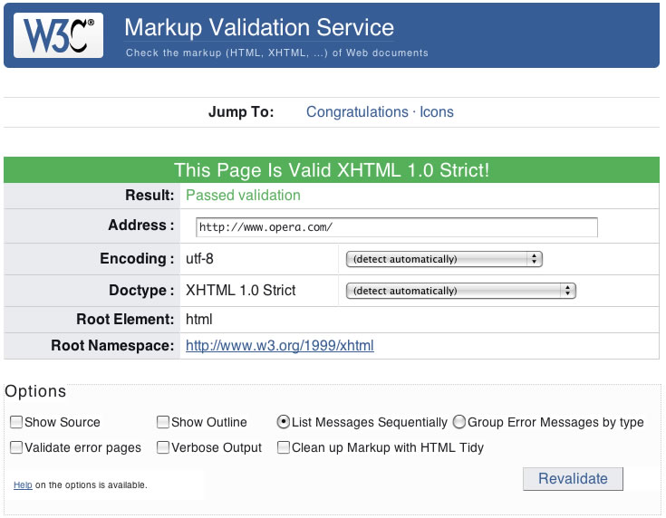
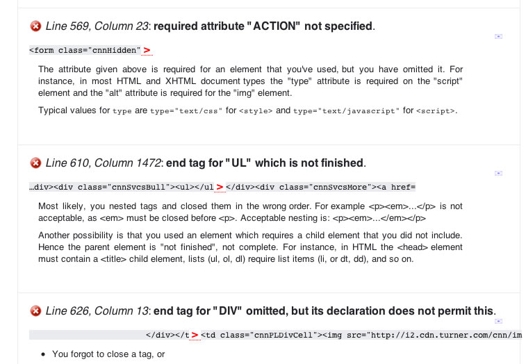
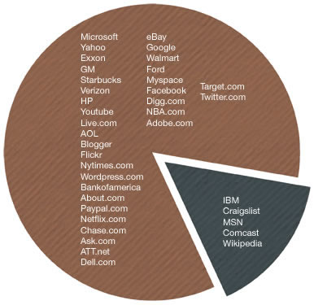

5. Webes szabványok — szép álom, de mi a valóság?
- Előző leírás — A webes szabványok modellje — HTML, CSS és JavaScript
- Következő leírás — Információs Architektúra — egy website tervezése
- Tartalomjegyzék
Bevezető
Egészen mostanáig a webes szabványok ideális, szép világáról volt szó. A szabványok segítségével ugyanúgy működnek a weblapok minden böngészőben, minden operációs rendszeren és minden elérhető elektronikus eszközön. De valóban ez a valóság? Valóban minden böngésző 100%-ig támogatja a szabványokat? Vajon minden fejlesztő egyformán jól használja a szabványokat? Szabványosan építik-e fel a webfejlesztők az oldalaikat, és aztán nyugodtan hátradőlnek, mert mindenhol tökéletesen működik az oldaluk?
Egy nagyon egyszerű válasz van ezekre a kérdésekre: nem. A fenti kérdések egy ideális helyzetre vonatkoznak, amely távol esik a valóságtól. Ebben a cikkben a következő témákkal fogunk foglalkozni:
- Hogyan ellenőrizheted, hogy megfelelsz-e a szabványoknak?
- Szabványtámogatás a jelenlegi weblapokon
- Miért hiányoznak a szabványos oldalak?
- Összefoglaló
- Olvasnivaló
- Tesztkérdések
Hogyan ellenőrizheted, hogy megfelelsz-e a szabványoknak?
Mielőtt belevágnánk a témába, felteheted magadban a kérdést: „Honnan lehet megtudni, hogy egy weblap használja a szabványokat?” Talán másképp néz ki, mint a többi weboldal?
Igen is meg nem is. A szabványos weboldalak, ha jól készítették el őket, nem néznek ki másképpen, mint az összetákolt, toldozott-foldozott weblapféleségek. Viszont az oldal forráskódja (amit a legtöbb böngészőben úgy nézhetsz meg, hogy jobb gombbal vagy a Ctrl-lal kattintasz egy weblapon, majd kiválasztod a „Forráskód” vagy egy ehhez hasonló menüpontot) már teljesen másképp néz ki. A szabványos weblap szép, tiszta jelölésekből áll, és csak kevés vagy egyáltalán semmilyen formázást nem tartalmaz a weblapra nézve. Ezt talán nem veszed még észre elsőre, de hidd el, a látássérültek, akik képernyő-felolvasókat használnak, vagy a keresőrobotok ezt azonnal észreveszik. A szabványok használatának előnyeiről már beszéltünk az előző leírásokban.
A legegyszerűbb módja a szabványosság ellenőrzésének egy egyszerű eszköz, az ún. validátor használata, amely online elérhető. A W3C (World Wide Web Consortium) ingyen elérhetővé tette a validátort a http://validator.w3.org/ címen (lásd az 1. ábrán). Ezt az eszközt használhatod (sőt ajánlott használnod) fejlesztési hibák keresésére az (X)HTML kódodban. A CSS-t egy másik validátorral lehet ellenőrizni, amelyet a http://jigsaw.w3.org/css-validator/ címen találsz. Kattints bátran ezekre a címekre, és ellenőrizd le néhány kedvenc oldalad forrását. (Itt jegyzem meg, hogy ez az oldal a blog.hu háttér miatt sajnos nem teljesen szabványos.)
1. ábra: A W3C validátora ellenőrzi a weblapokat, és megmutatja a lehetséges hibákat a jelölésekben.
Azzal, hogy meggyőződsz a weblapjaid érvényességéről, még nincs vége a harcnak. Hogyan ellenőrizhetjük, hogy a böngészők jól támogatják-e a szabványokat? A Web Standards Project készített egy tesztsorozatot, amelyeket Acid teszteknek neveztek el. Ezek a tesztek bonyolult HTML és CSS szabályokat tartalmaznak (és még néhány más szabályt is), amellyel ellenőrzik, hogy a böngészők jól jelenítik-e meg a különböző tesztekhez tartozó eseteket. Az Acid teszt utolsó verziója, az Acid3 még most is fejlesztés alatt áll. Az Acid tesztekről többet is olvashatsz az http://www.acidtests.org/ oldalon, ahol kipróbálhatod a tesztet a böngésződben is.
Szabványtámogatás a jelenlegi weblapokon
Vajon a nagyobb oldalak használják-e a webes szabványokat, vagy csak össze vannak dobálva? Nézzünk meg néhány nagyobb vállalatot a weben, hogy lássuk, hogyan értékeli őket a W3C validátora. Meg fogsz lepődni, hogy hány nagy oldal nem megy át a teszten; ettől azonban nem kell elcsüggedned, te még mindig megírhatod úgy az oldaladat, hogy az megfeleljen a szabványoknak. Az alábbi példákat olvasva ne felejtsd el azt sem, hogy minél nagyobb és bonyolultabb egy website, annál nehezebb benne megoldani, hogy átmenjen a validáláson (valamint figyelembe kell venni más szempontokat is, például a felhasznált technológiákat).
Amazon: Vásárlás szabványosan?
Valószínű, hogy ha vásároltál már valamit online, akkor belefutottál az Amazon.com oldalba (vagy valamelyik regionális változatába). Az Amazon a kibertér nagykereskedése, ahol mindent megtalálsz a könyvektől a CD-ken át az élelmiszerekig. De vajon átmegy-e az Amazon.com a validáláson? Nézd meg a 2. ábrát.

2. ábra: Az Amazon sajnos megbukott! Nem csak jelölési hibákat tartalmaz, hanem még a doctype-ot sem adták meg (amely megmondhatná, hogy milyen HTML/XHTML verziót használnak).
Az Amazonnak azonban van mentsége a szabványtámogatás hiányára. Nincs nálam az Amazon fejlesztési naplója, de ha tippelnem kéne, azt mondanám, hogy az Amazon már egy jó ideje köztünk van, és valószínűleg még mindig ugyanazt a szoftvert használják a website futtatására, mint amit régebben. Mivel a webes szabványok csak az ezredforduló után kerültek képbe, valószínűsíthető, hogy az Amazon rendszerét még abban az időben fejlesztették, amikor a webes szabványok csak homályos elképzelések voltak néhány fejlesztő fejében. Azt gyanítom, hogy az Amazon is eleget szenved a régi rendszerük miatt, amit tovább kell foltozzanak minden fejlesztésnél.
CNN: Szabványos hírek?
A hírszolgáltatók vajon valóban rendszerezettek? A CNN.com egyike a legnagyobb médiaoldalaknak a weben. Kiterjedt nemzetközi kapcsolatokkal rendelkeznek, a híreket valós időben kell megjelenítsék, úgyhogy biztosan van egy képzett, belső webfejlesztő csapatuk, amely képes szabványos oldalakat gyártani számukra. Vagy mégsem? Nézd meg a 3. ábrát.
3. ábra: A CNN.com (2008. április 15-én) 33 hibával megbukott. HTML 4.01 Transitional doctype-ot definiálnak, de sok helyen mégis XHTML jelölések vannak.
33 hiba egyáltalán nem rossz egy olyan méretű és komplexitású lapon, mint amilyen a CNN oldala. Ez a 33 hiba eredhet onnan (és itt megint csak találgatok), hogy a tartalomkezelő rendszerük nem szolgáltat teljes mértékben szabványos kódot, de a jelölési hibák származhatnak a hírek készítőitől is, akik az íráshoz ugyan értenek, de a webfejlesztéshez már nem; mindkét eshetőség esetén még elfogadhatóak a hibák.
Apple: az elegancia és a design csúcsa … de a validálásé is?
Az Apple széles körben ismert a mutatós és jól használható szoftvereiről és hardvereiről. A termékbejelentéseik sokszor egy isteni kinyilatkoztatással érnek fel a hűséges rajongóhad számára. Az Apple oldalát (lásd a 4. ábrát) különösen szép design és rendezettség jellemzi, de vajon átmegy a validáláson is?

4. ábra: Az Apple.com már nagyon közel van az érvényes HTML 4.01 Transitional jelöléshez. Az elenyésző 6 hiba az oldalon csak elírásokat és Safari-specifikus tageket takar.
Az Apple weboldala már nagyon közel áll a teljes validáláshoz. Valójában úgy 5 perc alatt ki lehetne javítani ezt a pár hibát, és akkor teljesen tiszta lenne az oldaluk. Egy hibát azért szeretnék kiemelni, mivel az Apple úgy döntött, hogy egy Safari-specifikus attribútumot használ a keresőmezőhöz (a type="search" attribútumot fűzték hozzá). Safariban ez lehetővé teszi, hogy egy kis nagyító ikonra kattintva megnézhessük a korábbi kereséseket. Viszont más böngészőkben, például Operában vagy Internet Explorerben csak egy egyszerű szövegmező jelenik meg.
Egy kis szabványtámogatási vizsgálat
Ahelyett, hogy a fenti példákhoz hasonlóan még megvizsgálnánk néhány tucat weblapot, inkább gyorsítunk egy kicsit. A fennmaradó oldalakból készítettem egy kördiagramot, amelyen 40 vállalati weboldalt soroltam fel, amelyeket a Fortune 500 listáról, valamint az Alexa listája alapján a legforgalmasabb oldalak közül válogattam ki. Az 5. ábrán megnézheted, hogy mit találtam:
5. ábra: Az oldalak 85%-a valamilyen módon megbukott a validáláson. Egyes oldalakon több ezer hiba van, míg másokon csak néhány elírás itt-ott.
Miért hiányoznak a szabványos oldalak?
Sírni támad kedvünk: „miért, miért nem képesek validálni?” Talán ez egy kissé drámai, de gondolom valami hasonló futott át neked is az agyadon. Miért csak ilyen kevés oldal szabványos? Már beszéltem korábban néhány lehetséges okról, mint például a régi kereskedelmi rendszerek vagy a tartalomkezelő rendszerek, de vannak még a háttérben más okok is.
Oktatás
Megnéztem néhány oktatási intézményt, ahol vezetői információs rendszer (MIS) tanfolyamot, számítástechnikai és New Media tanfolyamot is tartottak, amelyek közül mindegyik foglalkozott weboldalak készítésével. Bár sok hasznos dolgot lehet ezeken a tanfolyamokon tanulni, azt nem igazán említették egyiken sem, hogy hogyan kell voltaképpen egy weblap kódját megírni. Miután megnéztem több egyetemi kurzus programját is, az volt az általános benyomásom, hogy az olyan webes nyelvek, mint a HTML, a CSS és a JavaScript még nem érik el a számítástechnikai programozás szintjét, viszont már túllépik a MIS vagy New Media jellegű tanfolyamok kereteit.
Mindezzel oda szeretnék kilyukadni, hogy a legtöbb oktatási tananyag nem tartalmaz részleteket ezekkel a témákkal kapcsolatosan. Fogadni mernék, hogy ha megkérdeznénk 10 webfejlesztőt, akik webes szabványokkal dolgoznak, hogy hol tanulták meg a szabványok használatát, legalább 9 azt válaszolná, hogy saját erőből (a maradék 1 fejlesztő meg nem válaszolna semmit, mert éppen azzal lenne elfoglalva, hogy az oldala rendesen működjön IE6-tal is).
A World Wide Web Consortium (W3C), aki a szabványok fejlesztéséért felelős, valamint a Web Standars Project (WaSP) még nem adta fel a küzdelmet, és megpróbálják mind a fejlesztőket, mint a böngészők gyártóit rávenni a jobb szabványtámogatásra.
Ez az egész kurzus éppen azért készült, hogy egy megfelelő technikai szintű tananyagot nyújtson a webes szabványok megismeréséhez és tanításához, és éppen azért ingyenes, hogy bárki fel tudja használni tanulásra. Szeretnénk megszüntetni néhány olyan indokot (bár talán mondhatnánk kifogást is), hogy miért nem használják az emberek a szabványokat. A várható előnyök ismeretében már igazán nem marad semmilyen kifogás a szabványok használatával szemben.
Üzleti okok
Az egyik kedvenc weboldalamon, amely különböző vállalkozások web alapú startupjaival foglalkozik, többször is felmerült az a téma, hogy érdemes-e a webes szabványokat az ún. „Web 2.0 alkalmazásokban” felhasználni. Általában két táborra szakad a társaság, ahol az egyik oldal azt állítja, hogy van értelme (főleg az itt is felsorolt okok miatt), míg a másik tábor egyszerűen csak annyit mond, hogy „kit érdekel”.
Való igaz, hogy a böngészők sokszor megbirkóznak az igazán rossz kódokkal is. A weblapod nem kell átmenjen a validáláson ahhoz, hogy minden nagyobb böngészőben helyesen jelenjen meg. Ezért aztán üzleti szempontból, ahol az idő egyenlő pénz, miért kellene validálásra pazarolni az energiát egyáltalán? Ha össze tudsz dobálni egy táblázat alapú weboldalt félóra alatt, vagy megírod az oldalt félóra alatt HTML-ben és CSS-ben, majd újabb félórát fordítasz a validálásra és arra, hogy minden böngészőben egyformán működjön, ráadásul a végeredmény minden nagyobb böngészőben egyforma lesz, akkor szerinted melyik lesz az egyszerűbb út?
Sokan az én generációmból (úgy 30 fölött) még azt tanulták a webfejlesztésről, hogy az elrendezést táblázatokkal, a formázást pedig a font taggel lehet megoldani. Ijesztő lehet újra megtanulni valamit, amikor a jelenlegi módszer továbbra is működik (még mindig jól mutat a legtöbb webböngészőben). A munkáltatók nem ismerik a különbséget; még soha nem hallottam, hogy egy manager a jelölés minőségéről beszélt volna egy performance review alatt. Szóval, hol van a motiváció?
Most már biztosan te is sejted, hogy én melyik oldalt pártolom, úgyhogy elárulhatom, hogy a régi, összedobált kód írása rövidlátásra utal. Tapasztalataim alapján egy szabványos weblap újratervezése sokkal, de sokkal egyszerűbb, mint egy összetákolt oldalé (mindkettőhöz volt szerencsém). Sajnos az az utópia, hogy az újratervezéskor egyáltalán nem kell hozzányúlni az XHTML részhez, az esetek többségében nem igaz, de azért nagyon közel áll hozzá. Ne felejtsd el azt sem, hogy manapság már sokkal több olyan álláshirdetést látni, amelyben elvárják a webes szabványok ismeretét, mint régebben.
Összefoglaló
Ebben a leírásban arról beszéltünk, hogy napjainkban mennyire vannak elterjedve a webes szabványok, hogyan ellenőrizheted le, hogy egy oldal használja-e a szabványokat, hány oldal használja jelenleg a szabványokat, és beszéltünk az okokról, hogy miért nem térnek át sokan még mindig a webes szabványokra. Ahogy azt fentebb láthattad, a felmerült indokok nem elég meggyőzőek, és könnyű túllépni rajtuk.
Te mit teszel, mint a jövő webfejlesztője? Töröd magad a szabványokkal (és folyatod a sorozat olvasását), vagy elindítasz egy grafikus szerkesztőt, és összedobsz egy oldalt táblázatokkal?
Nézzük más oldalról: az eddigi legkomolyabb indok, amelyet a szabványok használatával szemben olvastam, az az volt, hogy a szabványos fejlesztés időpocsékolás, mivel ezt sokkal tovább tart megtanulni, mint a régi módszerek használatát. De ha már úgyis meg kell tanulnod az egyiket, miért ne tanulnád meg egyből a helyes utat, miért ne spórolnál meg magadnak egy csomó bosszúságot? Úgy döntöttél, hogy weboldalakat akarsz készíteni, miért ne csinálnád akkor jól, ha már lehetőséged van rá?
Olvasnivaló
- W3C validátor.
- A W3C weboldala (angolul) (további információkkal a szabványokról és a tervezett ajánlásokról).
- A Web Standards Project (angolul).
Tesztkérdések
- Megnéztünk néhány „nagy” weboldalt, hogy átmennek-e a validáláson. Futtasd le a validálást azokon az oldalakon is, amelyeket gyakran látogatsz. Átmennek rajta? Ha nem, nézd meg, hogy milyen hibákon buknak meg.
- Mi az a doctype? Mire jó?
- Milyen előnyei vannak a webes szabványok használatának az üzleti életben?
- Előző leírás — A webes szabványok modellje — HTML, CSS és JavaScript
- Következő leírás — Információs Architektúra — egy website tervezése
- Tartalomjegyzék
A szerzőről

Jonathan Lane az Industry Interactive vezetője, amely webfejlesztéssel, valamint webalkalmazások fejlesztésével foglalkozó cég Kanadában. A webfejlesztéssel a Lethbridge Curriculum Re-Development Center Egyetemen kezdett foglalkozni sok évvel ezelőtt mint webes projekt koordinátor.
A Flyingtroll oldalon blogol, és jelenleg a Mailmanagr-t fejleszti, ami egy email interfész a Basecamp projekt management alkalmazáshoz.
This article is licensed under a Creative Commons Attribution, Non Commercial - Share Alike 2.5 license.
Comments
The forum archive of this article is still available on My Opera.
No new comments accepted.